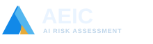

Architecture · Engineering · Infrastructure · Construction
Home
Assessments
New Assessment
Reports
Templates
Resources
About
Settings
Help
AEIC AI Risk Assessment
Proof of concept · v0.3
Local browser storage only
Risk-based AI governance
AI Use Case Assessment
Understand exposure. Verify controls. Make informed decisions.